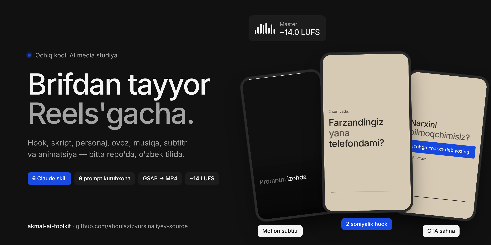

Hook, skript, multfilm personaj, logo, ovoz, musiqa, SFX, −14 LUFS mastering, animatsion subtitr va GSAP animatsiya — barchasi bitta toolkit'da. Claude skill'lari, tayyor promptlar va ishlaydigan skriptlar.

Brifdan tayyor videogacha 10 bosqichni boshqaradi.
HikoyaHook, 6 bitli hikoya, izchil multfilm personaj.
OvozVO, musiqa, SFX, ducking va −14 LUFS master.
SubtitrWhisper vaqtlari → GSAP yoki .ass → video.
DizaynLogo, tokenlar, poster, carousel, end card.
WebGSAP/CSS animatsiya, render va deploy.
git clone https://github.com/abdulazizyursinaliyev-source/akmal-ai-toolkit
cd akmal-ai-toolkit && npm i playwright gsap && npx playwright install chromium
# Reklama videosi (HTML → MP4)
node scripts/render-html.js templates/ad-scenes.html ad.mp4
# Ovoz + musiqa + SFX → -14 LUFS
bash scripts/master-audio.sh -v voice.wav -m music.mp3 -o final.wavHar bir yulduzcha bu toolkit'ni ko'proq o'zbek tadbirkor va kontent yaratuvchiga yetkazadi.
★ Star on GitHub